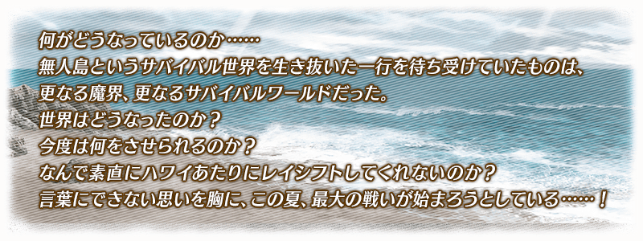
◆活動舉辦期間◆
2017年7月20日(四) 17:0017:30～7月29日(六) 22:59
◆活動概要◆
舉辦期間限定活動「復刻:夏日! 大海! 開拓! FGO 2016 Summer 迦勒底烈火奧德賽 ～進化的文明～ 輕量版」！
收集活動道具實行開拓關卡，更加開拓生存世界吧。
此為二部構成活動的第二部。
通過第一部份的主線關卡後才能參加。
在第一部份的主線關卡通過時期間限定加入的「★4(SR)斯卡哈(Assassin)」，通過第二部的主線關卡後就會正式加入。
推進活動以斯卡哈〔Assassin〕的正式加入為目標吧！
另外，也追加只限通過「終局特異點」及「復刻:夏日! 大海! 開拓! FGO 2016 Summer 迦勒底烈火奧德賽 ～進化的文明～ 輕量版」全部主線關卡的Master才能參加的挑戰關卡。
※本活動為復刻於2016年舉辦的「夏日! 大海! 開拓! FGO 2016 Summer 迦勒底烈火奧德賽 ～進化的文明～ 」，調整一部份活動専用道具交換的交換數等變得容易遊玩的「復刻輕量版活動」。
※活動限定Servant「★4(SR)斯卡哈(Assassin)」及活動限定概念禮裝與2016年舉辦時同様可以獲得。
◆活動参加條件◆
只限通過「復刻:夏日! 大海! 開拓! FGO 2016 Summer 迦勒底夏日回憶 ～療癒白沙灘～ 輕量版」主線關卡的Master才能参加
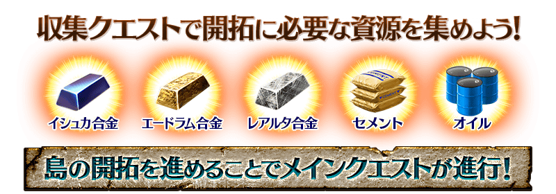
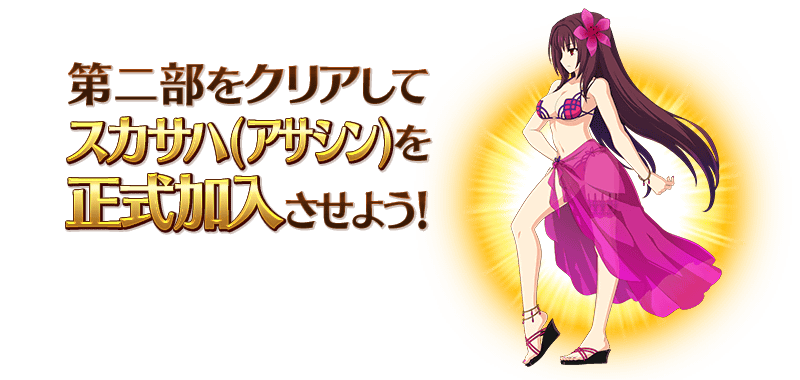
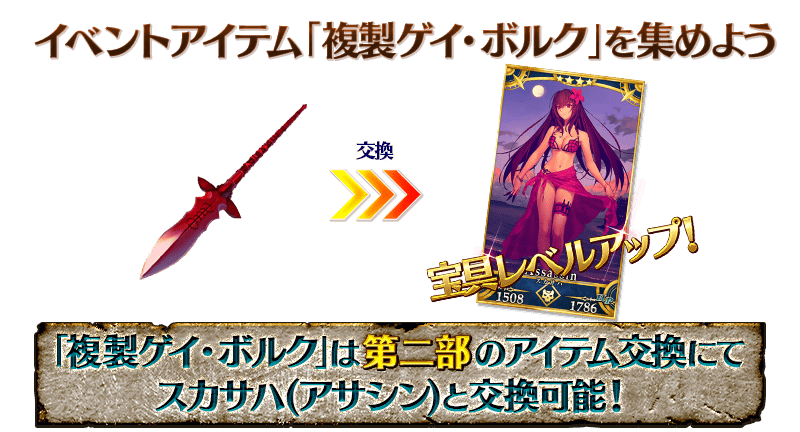
※「複製ゲイ･ボルク」與斯卡哈(Assassin)的交換會在斯卡哈(Assassin)正式加入後開放。
※「複製ゲイ･ボルク」可從通過第二部的主線關卡及第一部的「耀眼･夏日 ～與玉藻出遊～」「耀眼･夏日 ～與莫德雷德同行～」「耀眼･夏日 ～與清姫約會～」後開放的各自關卡與第二部的「耀眼･夏日 〜Gáe Bolg職人很早起～」入手。
推進主線關卡會發生開拓關卡。
開拓關卡同時會開放３種類，只能選擇其中１種實行。
在開拓關卡的實行會消耗資源(活動道具)。
活動道具可以靠挑戰收集關卡獲得。
※實行１種開拓關卡的話，沒選到的剩餘２種開拓關卡會消失。
實行在通過第一部後出現的開拓重置關卡的話，可以重新選擇沒選到的開拓關卡。
通過一定數開拓關卡的話會開放主線關卡。
藉著主線關卡的進行發生新的開拓關卡及收集關卡。
反覆地「收集」「開拓」，推進主線關卡吧！
◆耀眼･夏日關卡◆
能與活動限定Servant們體驗特別故事的關卡。
透過主線關卡的進行來開放。。
另外，可以獲得呼符做為通過報酬。
| 關卡名 | 關卡通過報酬 |
|---|---|
| 耀眼･夏日 〜Gáe Bolg職人很早起〜 |
呼符×1 複製ゲイ･ボルク |
| 耀眼･夏日 〜King Archer〜 |
呼符×1 |
| 耀眼･夏日 〜２１世紀救世主傳說〜 |
呼符×1 |
| 耀眼･夏日 〜Sing･A･Song！〜 |
呼符×1 |
◆發現埋沒物！關卡◆
消耗AP挑戰關卡的話，可以獲得更多活動道具的關卡。
推進一定以上主線關卡後開放，依照經過天數追加。
開放的關卡在活動期間中，無論何時都能挑戰。
※通過關卡後消失。
◆開拓重置關卡◆
通過第一部主線關卡的話，會出現開拓重置關卡。
實行開拓重置關卡能重新開始島嶼的開拓。
藉著利用開拓重置關卡，遊玩錯過的故事，獲得之前沒辦法獲得的關卡通過報酬，再次享受島嶼的開拓。
※進行重置後開拓消費的活動道具不會歸還。
◆超值攻略方法・其1◆
依照Servant的職階賦予活動道具的獲得數提升的加成！
例如，在可入手石油關卡的編成加入Saber職階Servant的話會提升石油的獲得數。
關於各職階獲得數提升的活動道具，可在關卡開始時的編成畫面和Servant詳細確認。
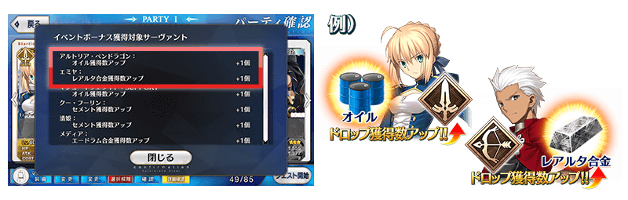
| 活動道具 | 職階 |
|---|---|
水之合金 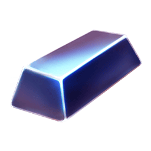 |
Rider |
| Avenger | |
光之合金 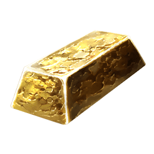 |
Caster |
| Alterego | |
星之合金 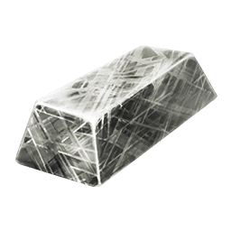 |
Archer |
| MoonCancer | |
石油 |
Saber |
| Assassin | |
| Shielder | |
水泥 |
Lancer |
| Berserker | |
| Ruler |
◆超值攻略方法・其2◆
裝備能靠第二部的活動道具交換入手的活動限定概念禮裝「★5(SSR) カルデア･ライフセーバーズ」的話，石油與水泥的掉落獲得數會提升。
◆超值攻略方法・其3◆
裝備「復刻 夏日! 大海! 開拓! FGO 2016 Summer Pick Up召喚2」期間限定概念禮裝的話，活動道具「水之合金」「光之合金」「星之合金」各自的獲得數會提升。
※請注意在各關卡的道具掉落率並非100％。
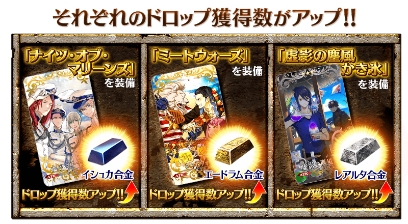
◆超值攻略方法・其4◆
在「復刻 夏日! 大海! 開拓! FGO 2016 Summer Pick Up召喚1」期間限定概念禮裝新追加第二部的活動道具特效！
裝備的話，活動道具「水之合金」「光之合金」「星之合金」各自的獲得數會提升。
※請注意在各關卡的道具掉落率並非100％。
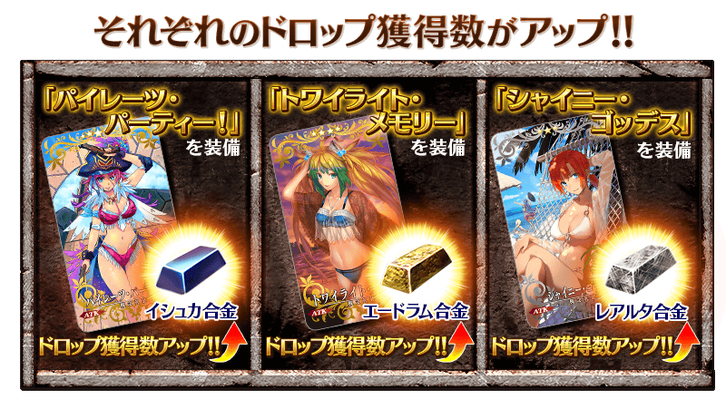
◆超值攻略方法・其5◆
裝備「復刻 夏日! 大海! 開拓! FGO 2016 Summer Pick Up召喚2」期間限定概念禮裝的話，活動第一部份的活動道具「鐵材」「石材」「木材」的掉落獲得數也會提升！
※請注意在各關卡的道具掉落率並非100％。
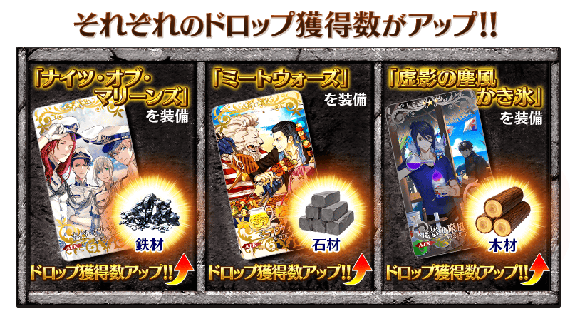
關於活動第一部份詳情請在『期間限定活動「復刻:夏日! 大海! 開拓! FGO 2016 Summer 迦勒底夏日回憶 ～療癒白沙灘～ 輕量版」！』的公告確認。
| 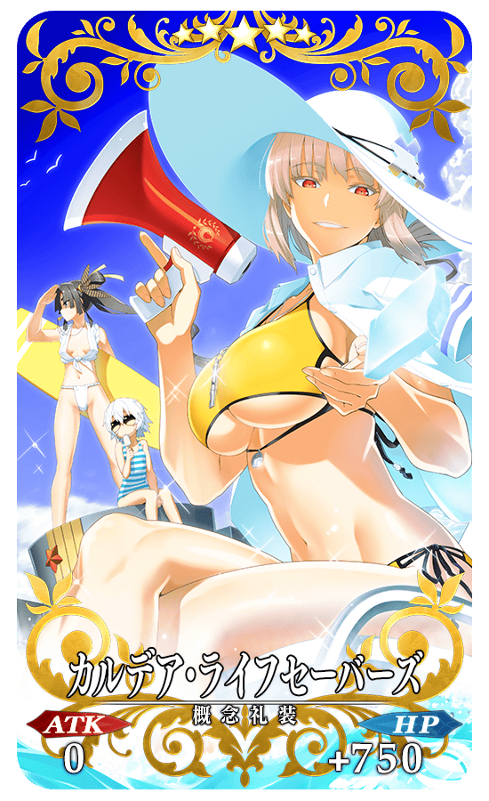 |
★★★★★SSR |
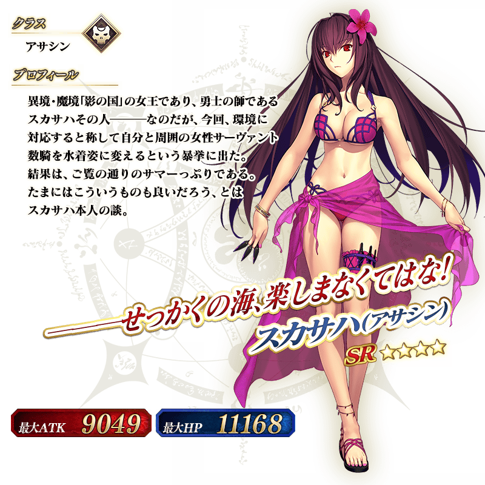
※斯卡哈〔Assassin〕在第一部通過後以期間限定加入，第二部通過後正式加入。
靈基再臨需要活動限定的専用靈基再臨道具「鈴鳴りの枝」。
「鈴鳴りの枝」是用第一部份的活動道具交換來獲得。
◆交換方法◆
交換期間:2017年7月20日(四) 17:0017:30～8月2日(三) 11:59
※交換期間結束後「複製ゲイ･ボルク」「水之合金」「光之合金」「星之合金」「石油」「水泥」會消失。
本次的活動存在第一部與第二部2種類的「活動道具交換」畫面。
在各自的區域地圖畫面按下「道具交換」鍵，或是在達文西工房內的「活動道具交換」選擇活動橫幅，就能用活動道具交換道具。
◆可用複製ゲイ･ボルク交換的道具◆
| 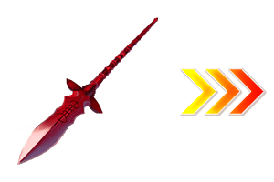 |
【活動限定Servant】 |
◆可用水之合金交換的道具◆
| 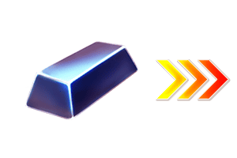 |
【活動限定概念禮裝】 【技能強化素材、靈基再臨素材】 【靈基再臨素材】 【其他道具】 |
◆可用光之合金交換的道具◆
| 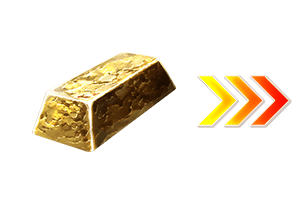 |
【活動限定概念禮裝】 【技能強化素材、靈基再臨素材】 【靈基再臨素材】 【其他道具】 |
◆可用星之合金交換的道具◆
|
【活動限定概念禮裝】 【技能強化素材、靈基再臨素材】 【靈基再臨素材】 【其他道具】 |
◆可用石油交換的道具◆
|
【活動限定概念禮裝】 【技能強化素材、靈基再臨素材】 【靈基再臨素材】 【其他道具】 |
◆可用水泥交換的道具◆
| 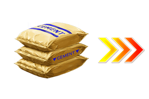 |
【活動限定概念禮裝】 【技能強化素材、靈基再臨素材】 【其他道具】 |
以通過「終局特異點」及「復刻:夏日! 大海! 開拓! FGO 2016 Summer 迦勒底烈火奧德賽 ～進化的文明～ 輕量版」主線關卡的Master為對象開放高難易度關卡「挑戰關卡」。
通過挑戰關卡時，可獲得豪華報酬。
挑戰關卡就算在通過後也不會消失，能無數次挑戦，可以變更Servant和概念禮裝的組合後再次挑戰。
※關卡通過報酬、戰利品、MasterEXP、魔術禮裝EXP、絆點數只限在初次通過時獲得。
◆挑戰關卡参加條件◆
只限通過「終局特異點」及「復刻:夏日! 大海! 開拓! FGO 2016 Summer 迦勒底烈火奧德賽 ～進化的文明～ 輕量版」全部主線關卡的Master才能参加
◆挑戰關卡初次通過報酬◆
英靈結晶・流星之芙芙ALL★4(HP) 1枚
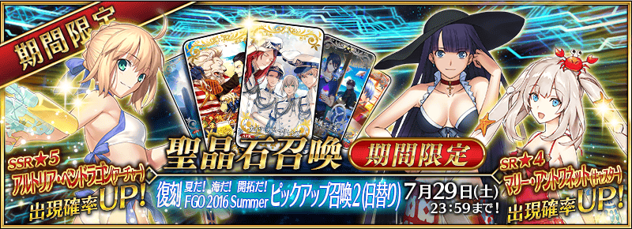
◆「復刻 夏日! 大海! 開拓! FGO 2016 Summer Pick Up召喚2(每日交替)」期間◆
期間:2017年7月20日(四) 17:0017:30～7月29日(六) 22:59
以期間限定舉辦「復刻 夏日! 大海! 開拓! FGO 2016 Summer Pick Up召喚2(每日交替)」！
變更於2016年舉辦的「夏日! 大海! 開拓! FGO 2016 Summer Pick Up召喚2」一部份内容進行復刻。
說到夏日活動，身穿適合夏日服裝的Servant「★5(SSR)阿爾托莉亞・潘德拉剛(Archer)」「★4(SR)瑪莉・安東尼(Caster)」「★4(SR)瑪爾大(Ruler)」以期間限定登場！
「★5(SSR)阿爾托莉亞・潘德拉剛(Archer)」常駐Pick Up！
另外「★4(SR)瑪莉・安東尼(Caster)」「★4(SR)瑪爾大(Ruler)」以每日交替Pick Up！
詳情請在聖晶石召喚畫面左下的召喚詳細確認。
※阿爾托莉亞・潘德拉剛(Archer)、瑪莉・安東尼(Caster)、瑪爾大(Ruler)在Pick Up召喚期間結束後，不會追加到故事召喚。
裝備期間限定概念禮裝「★5(SSR)ナイツ・オブ・マリーンズ」「★4(SR)ミートウォーズ」「★3(R)虚影の塵風かき氷」的話，活動道具的掉落獲得數會提升。
※「★3(R)虚影の塵風かき氷」在Pick Up期間中，也能在友情點數召喚獲得。
Pick Up期間中，期間限定Servant、期間限定概念禮裝的出現機率提升！
10次召喚中確定1張★4(SR)以上和確定1位★3(R)以上的Servant！
※確定★4(SR)以上包含Servant和概念禮裝。
※所謂「出現機率提升」意指比同稀有度的Servant及概念禮裝出現機率更高的設定。
| 每日交替Pick Up期間 | 每日交替Pick Up內容 |
|---|---|
| 7月20日(四) 7月22日(六) 22:59 |
阿爾托莉亞・潘德拉剛(Archer)、瑪莉・安東尼(Caster)、瑪爾大(Ruler) |
| 7月22日(六) 23:00～ 7月24日(一) 22:59 |
阿爾托莉亞・潘德拉剛(Archer)、瑪莉・安東尼(Caster) |
| 7月24日(一) 23:00～ 7月26日(三) 22:59 |
阿爾托莉亞・潘德拉剛(Archer)、瑪爾大(Ruler) |
| 7月26日(三) 23:00～ 7月29日(六) 22:59 |
阿爾托莉亞・潘德拉剛(Archer)、瑪莉・安東尼(Caster)、瑪爾大(Ruler) |
※請注意會以每日交替變更Pick Up的Servant。
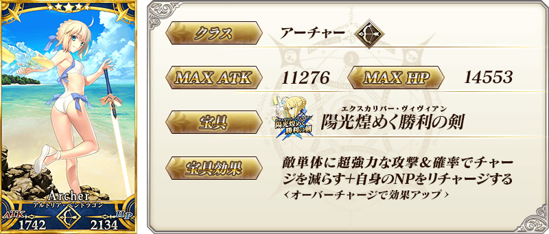
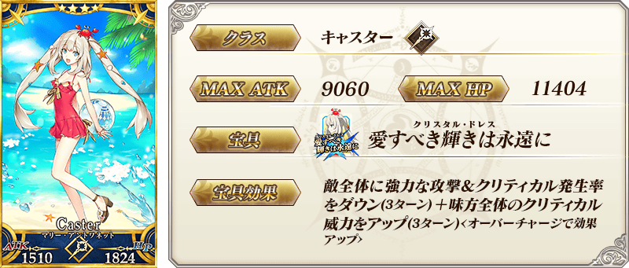
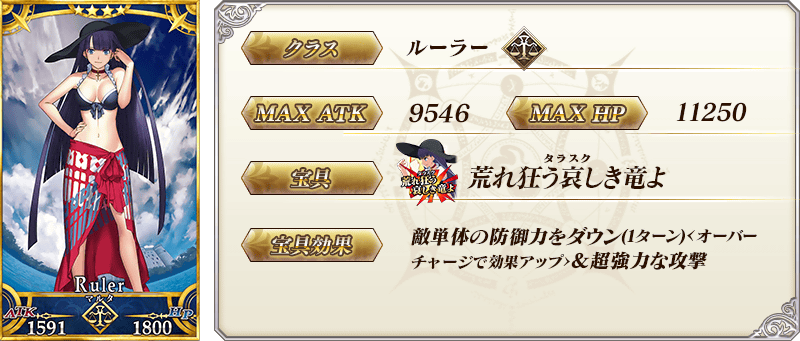
| 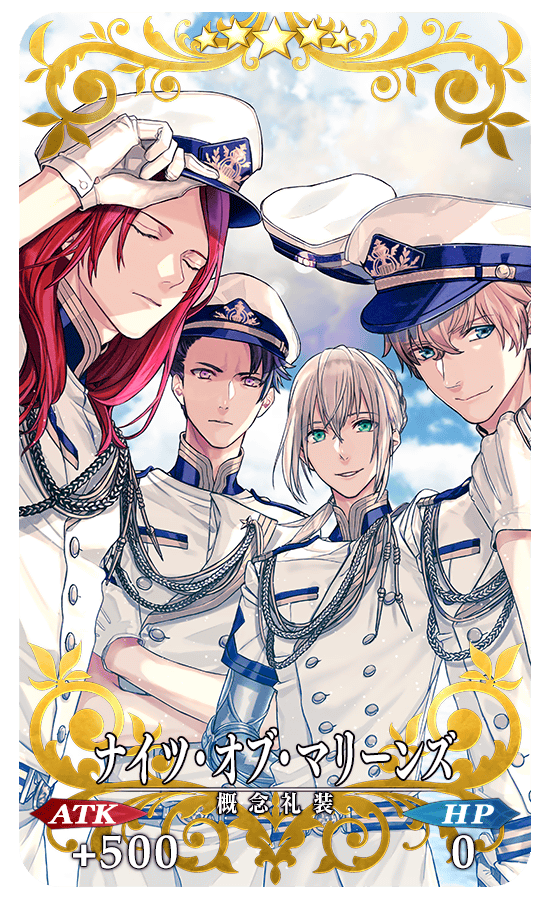 |
★★★★★SSR |
| 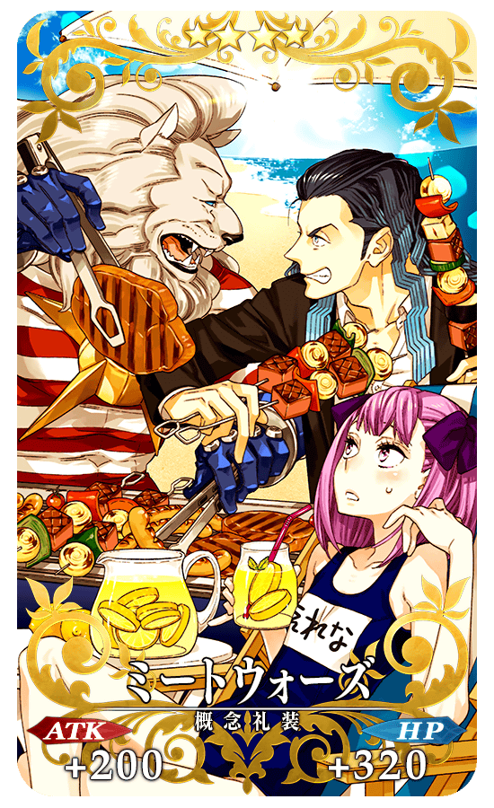 |
★★★★SR |
| 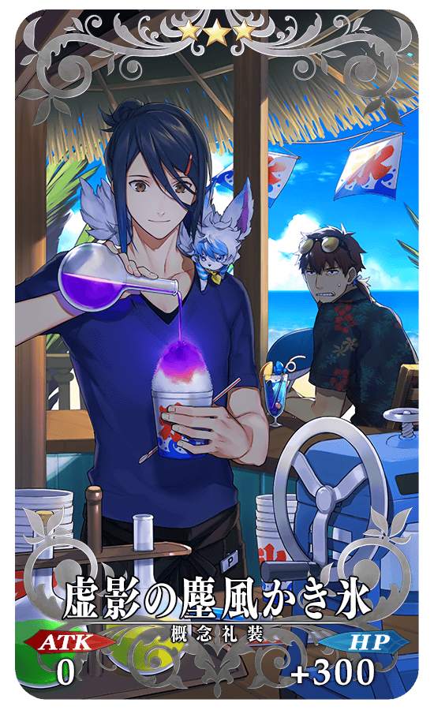 |
★★★R |
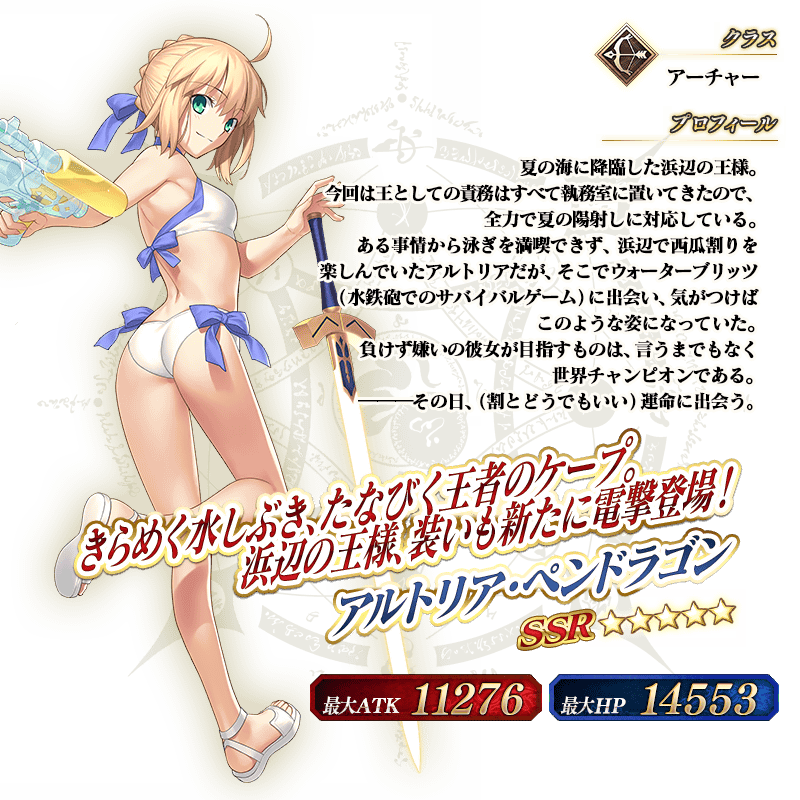
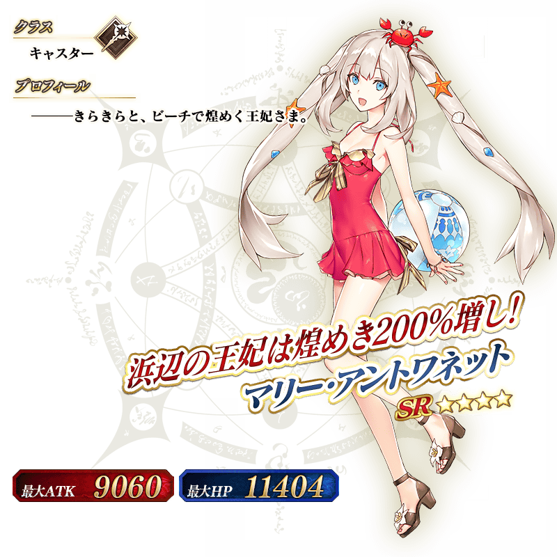
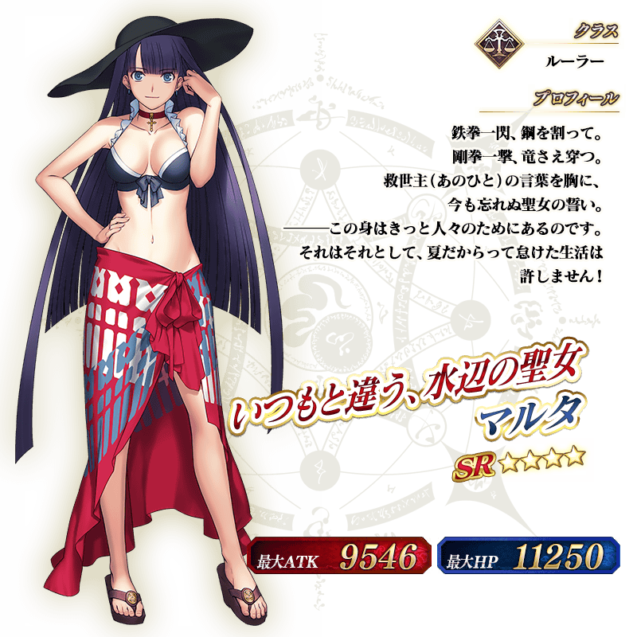